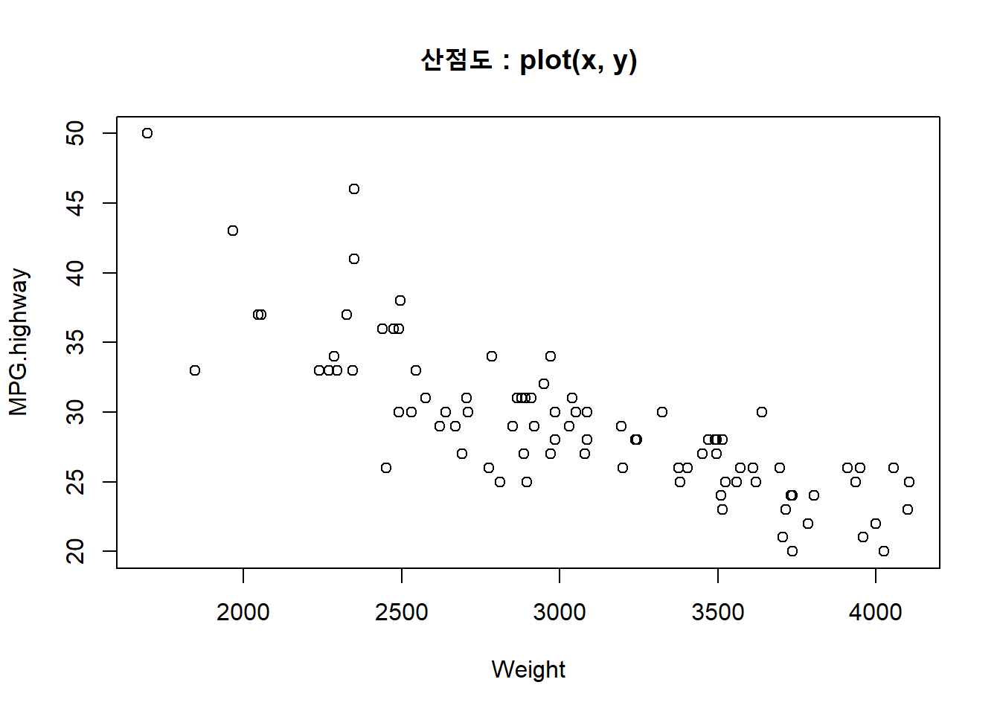
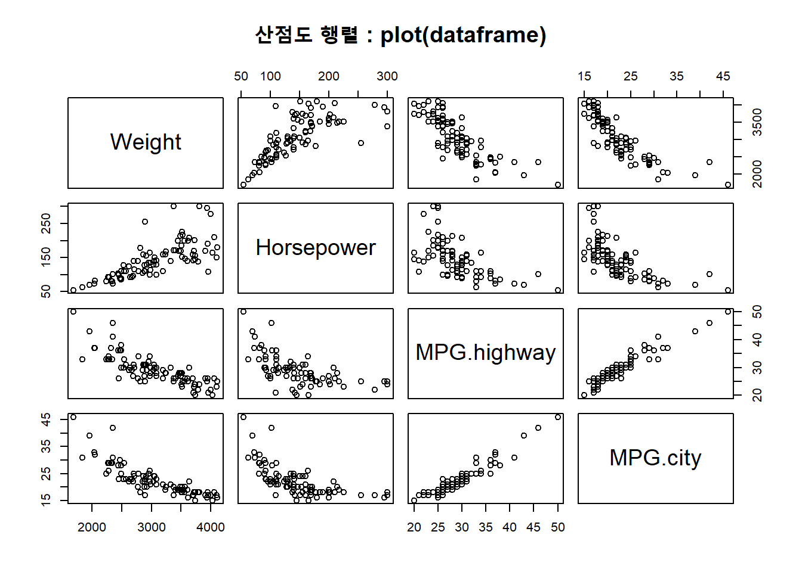
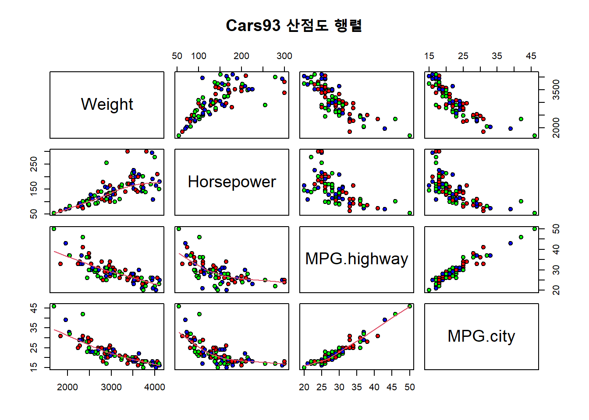
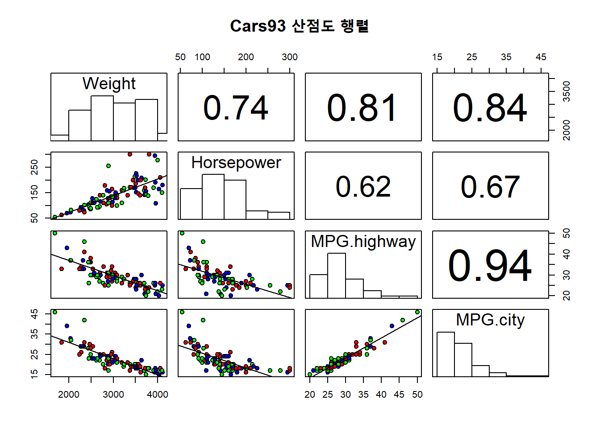
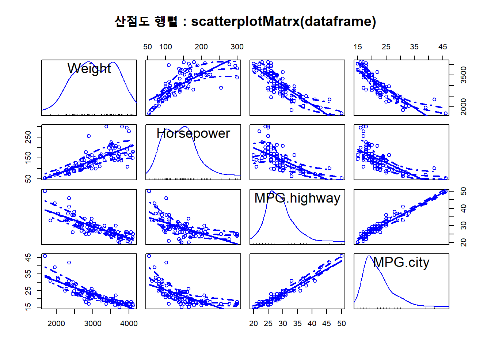
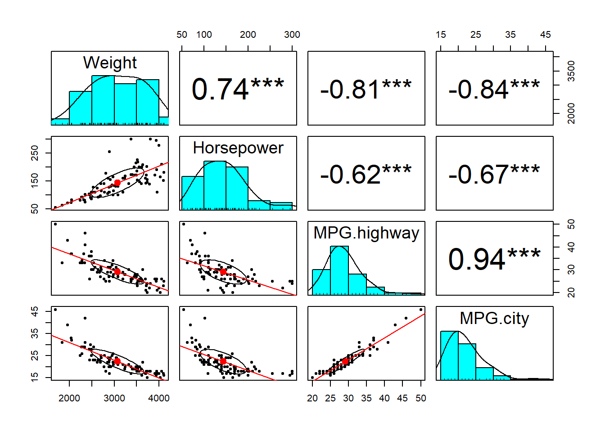
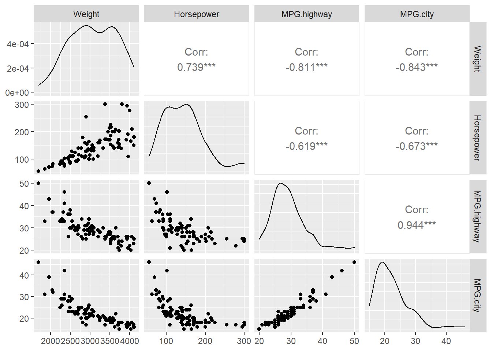
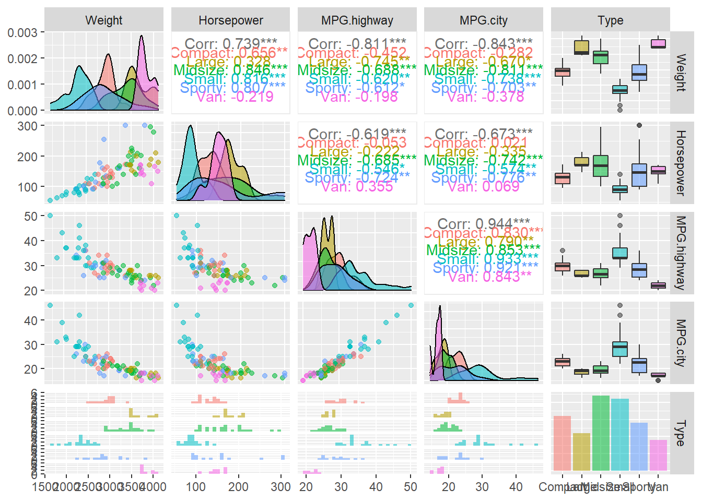

20.3 이변량 연속형 변수 그래프
플롯 함수의 데이터 인수가 2개 이며, 그 데이터가 연속형(정수형, 실수형) 인 경우의 그래프입니다.
이러한 유형의 변수의 시각화를 위한 다양한 그래프 함수가 있는데 이 절에서는 다음과 같은 유형의 그래프에 대하여 살펴보겠습니다.
산점도(Scatter plot)
산점도 행렬(Scatter plot matrix)
20.3.1 산점도 (scatter plot)
산점도는 2개의 연속형 변수 간의 관계를 보기 위하여 직교좌표의 평면에 관측점을 찍어 만든 통계 그래프입니다. 산포도에 표시되는 각 점들은 자료의 관측 값을 나타내며 산점도에서 각 점의 위치는 각 관측값이 가지는 X축, Y축 변수의 값으로 결정되게 됩니다.
산점도는 plot() 함수로 작성됩니다.
다음의 예는 Cars93 데이터 세트의 차량의 무게(Weight)와 고속도로의 연비(MPG.highwat) 간의 관계를 시각화로 표현하는 예입니다.
## 이변량 연속형 변수의 그래프를 그립니다.
# plot(x, y) 함수를 이용하여 시각화할 수 있습니다.
library(MASS)
attach(Cars93)## The following object is masked _by_ .GlobalEnv:
##
## Cylindersplot(Weight, MPG.highway, main = "산점도 : plot(x, y)")
detach(Cars93)이 산점도를 통해 x 축의 차량의 무게(Weight)가 커질 수록 y 축의 고속도로의 연비(MPG.highwat)가 떨어지는 것을 시각적으로 확인할 수 있습니다.
? plot() 를 이용하여 자세한 도움말을 참고하기 바랍니다.
20.3.2 산점도 행렬 : plot(dataframe), pairs(), scatterplotMatrix(dataframe)
산점도 행렬는 산포도 그래프를 여러 개의 변수 조합별로 그린 행렬 형태의 그래프입니다. 이 그래프를 이용하면 변수들끼리의 선형성을 파악하기 용이하기 때문에 탐색적 데이터 분석을 수행할 때, 거의 빠지지 않고 살펴보는 과정 중 하나라고 할 수 있습니다. 이 절에서는 R로 어떻게 산점도 행렬을 어떻게 그릴 수 있는지 확인해 보겠습니다.
20.3.2.1 plot() 함수 이용
다음의 예에서는 차량의 무게(Weight), 마력(Horsepower), 고속도록 연비(MPG.highway) 그리고 시내 연비(MPG.city) 등의 4 개의 변수 간의 관계를 산점도 행렬로 시각화하는 예입니다.
# plot(dataframe) 함수를 이용하여 산점도 행렬을 작성합니다.
library(MASS)
# Cars93 데이터 세트에서 4 개의 컬럼을 서브 세팅합니다.
Cars93_subset <- Cars93[ ,c("Weight", "Horsepower", "MPG.highway", "MPG.city")]
# 서브세팅한 데이터 세트를 plot() 함수로 시각화합니다.
plot(Cars93_subset, main = "산점도 행렬 : plot(dataframe)") 
20.3.2.2 pairs() 함수 이용
pairs() 함수를 이용해서도 여러 변수들 간의 관계를 시각화할 수 있습니다.
pairs() 함수의 형식은 다음과 같습니다.
S3 method for class ‘formula’
pairs(formula, data = NULL, ..., subset, na.action = stats::na.pass)Default S3 method:
pairs(x, labels, panel = points, ..., horInd = 1:nc, verInd = 1:nc, lower.panel = panel, upper.panel = panel, diag.panel = NULL, text.panel = textPanel, label.pos = 0.5 + has.diag/3, line.main = 3, cex.labels = NULL, font.labels = 1, row1attop = TRUE, gap = 1, log = "", horOdd = !row1attop, verOdd = !row1attop)
pairs() 함수를 이용하여 앞의 예를 시각화해 보겠습니다. pairs() 함수를 이용하는 경우 분석하고자 하는 변수들을 모형식(formula)으로 설정해 주어야 합니다. 우리가 시각화하고자 하는 것은 차량의 무게(Weight), 마력(Horsepower), 고속도록 연비(MPG.highway) 그리고 시내 연비(MPG.city) 등의 4 개의 변수 간의 관계이기 때문에, 이를 모형식으로 표현하면 다음과 같습니다.
\[
\sim Weight + Horesepower + MPG.highway + MPG.city
\]
library(MASS)
# pairs() 함수를 이용하여 산점도 행렬을 작성합니다.
pairs(~ Weight + Horsepower + MPG.highway + MPG.city, data=Cars93) 
pairs() 함수는 모수(parameters)를 활용하면 산점도 행렬을 다양하게 표현할 수 있습니다. 다음의 예는 대각선 아래의 행렬에 LOWESS ^[LOWESS는 데이터를 설명하는 일종의 추세선을 찾는 방법입니다. LOWESS는 데이터의 각 점을 y, 각 점의 주변에 위치한 점들을 x라고 할 때 했을 때, y를 x로부터 추정하는 다항식을 찾습니다. LOWESS가 찾는 다항식은 y = ax +b 또는 y = ax^2 + bx + c와 같은 형태의 저차 다항식low degree polynomial입니다. 다항식을 찾을 때는 추정하고자 하는 y에 가까운 x일수록 더 큰 가중치를 줍니다. 이런 이유로 LOWESS는 지역 가중 다항식 회귀3 Locally Weighted Polynomial Regression라고도 부르며, 그 결과는 각 점을 그 주변 점들로 설명하는 다항식들이 연결된 모양이 됩니다. 이렇게 각 점에서 찾아진 다항식들을 부드럽게 연결하면 데이터의 추세를 보여주는 선이 됩니다. 자세한 내용은 참고자료 [1]을 보기 바랍니다.]를 적용한 예입니다.
# pairs() 함수의 모수를 설정히여 산점도 행렬을 시각화합니다.
pairs(~ Weight + Horsepower + MPG.highway + MPG.city, data=Cars93, #
lower.panel=panel.smooth, # lowess smooth(기본값) 곡선을 대각선 아래 행렬에 표시합니다.
pch = 21, # 속이 빈 동그란 점입니다.
bg = c("red", "blue", "green"), # 동그란 점 안의 색을 지정합니다.
main="Cars93 산점도 행렬")
이를 좀 더 발전시켜서 대각선 아래에는 선형회귀선, 대각선 위에는 상관계수 값을 그리고 대각선에는 각 변수의 히스토그램 등으로 시각화해 보겠습니다. 이를 위해 선형회귀선을 구하는 panel.lm() 함수, 상관계수 값을 구하는 panel.cor() 함수 그리고 히스토그램을 그리는 panel.hist() 함수를 정의하였습니다. 이 함수들은 그대로 사용하면 됩니다.
library(MASS)
## 산점도 행렬에 다양한 요소들을 추가하는 예입니다.
# 선형 회귀선을 구하는 함수를 정의합니다
panel.lm <- function (x, y, col = par("col"), bg = NA, pch = par("pch"),
cex = 1, col.smooth = "black", ...) {
points(x, y, pch = pch, col = col, bg = bg, cex = cex)
abline(stats::lm(y ~ x), col = col.smooth, ...)
}
# 상관계수 값을 구하는 함수를 정의합니다.
panel.cor <- function(x, y, digits=2, prefix="", cex.cor, ...)
{
usr <- par("usr"); on.exit(par(usr)) # on.exit() par()함수 인자가 있으면 실행
par(usr = c(0, 1, 0, 1))
r <- abs(cor(x, y)) #상관계수 절대값
txt <- format(c(r, 0.123456789), digits=digits)[1] # 상관계수 자릿수 지정
txt <- paste(prefix, txt, sep="")
if(missing(cex.cor)) cex.cor <- 0.8/strwidth(txt)
text(0.5, 0.5, txt, cex = cex.cor * r) #상관계수 크기에 비례하게 글자지정
}
# 히스토그램 생성하는 함수를 정의합니다.
panel.hist <- function(x, ...) {
usr <- par("usr")
on.exit(par(usr))
par(usr = c(usr[1:2], 0, 1.5) )
h <- hist(x, plot = FALSE)
breaks <- h$breaks
nB <- length(breaks)
y <- h$counts
y <- y/max(y)
rect(breaks[-nB], 0, breaks[-1], y, col="white", ...)
}
# 선형 회귀선과 상관계수를 표시하는 산점도 행렬을 그립니다.
pairs(~ Weight + Horsepower + MPG.highway + MPG.city, data=Cars93,
# lower.panel=panel.smooth,
lower.panel = panel.lm, # 대각선 아래의 그림에 선형회귀선을 표시합니다.
upper.panel = panel.cor, # 대각선 위에 상관계수를 표시합니다.
diag.panel = panel.hist, # 대각선에 히스토그램을 표시합니다.
pch=21, # 속이 빈 동그란 점으로 표시합니다.
bg = c("red", "blue", "green"), # 동그란 점 안의 색을 지정합니다.
main="Cars93 산점도 행렬") # 점의 모양과 그림 제목을 표시합니다.
? pairs() 를 이용하여 자세한 도움말을 참고하기 바랍니다.
20.3.2.3 car 패키지의 scatterplotMatrix() 함수 이용
# scatter plot matrix : scatterplotMatrix(dataframe)
library(car) ## Loading required package: carData##
## Attaching package: 'car'## The following object is masked from 'package:dplyr':
##
## recode## The following object is masked from 'package:purrr':
##
## somescatterplotMatrix(Cars93_subset,
main = "산점도 행렬 : scatterplotMatrx(dataframe)")
? car::scatterplotMatrix() 를 이용하여 자세한 도움말을 참고하기 바랍니다.
20.3.2.4 psych 패키지의 pairs.panel() 함수 이용
# psych 패키지의 pairs.panels() 함수로 산점도 행렬을 그립니다.
# 패키지를 불러옵니다.
# install.packages("psych")
library(psych)##
## Attaching package: 'psych'## The following object is masked from 'package:car':
##
## logit## The following object is masked from 'package:Hmisc':
##
## describe## The following objects are masked from 'package:ggplot2':
##
## %+%, alpha# Cars93 데이터 세트에서 4 개의 컬럼을 서브 세팅합니다.
Cars93_subset <- Cars93[ ,c("Weight", "Horsepower", "MPG.highway", "MPG.city")]
# 서브세팅한 데이터 세트를 pairs.panels() 함수로 시각화합니다.
pairs.panels(Cars93_subset,
stars = TRUE,
lm =TRUE)
pairs() 함수와 비교하면 많은 옵션들이 그래프에 추가된 것을 확인할 수 있습니다.
? psych::pairs.panel() 를 이용하여 자세한 도움말을 참고하기 바랍니다.
GGally 패키지의 ggpairs()
산점도 행렬을 더 하려하게 그릴 수 있게 해 주는 것이 GGally 패키지의 ggpairs() 함수입니다.
# 패키지를 불러옵니다.
# install.packages("GGally")
library(GGally)## Registered S3 method overwritten by 'GGally':
## method from
## +.gg ggplot2# Cars93 데이터 세트에서 4 개의 컬럼을 서브 세팅합니다.
Cars93_subset1 <- Cars93[ ,c("Weight", "Horsepower", "MPG.highway", "MPG.city")]
# 산점도 행렬을 ggpairs() 함수로 시각화 합니다.
ggpairs(Cars93_subset1)
### 범주형 변수 Type의 이용
# Cars93 데이터 세트에서 4개의 컬럼과 범주형 컬럼인 Type을 서브 세팅합니다.
Cars93_subset2 <- Cars93[ ,c("Weight", "Horsepower", "MPG.highway", "MPG.city", "Type")]
# 서브세팅한 데이터 세트를 범주형 Type 별로 색을 달리해서
# **`GGally` 패키지의 `ggpairs()` 함수로 시각화합니다.
ggpairs(Cars93_subset2, # 데이터 프레임을 지정해 줍니다.
aes(colour = Type, alpha = 0.4)) # Type 컬럼의 값 별로 색깔을 달리합니다.## `stat_bin()` using `bins = 30`. Pick better value with `binwidth`.## `stat_bin()` using `bins = 30`. Pick better value with `binwidth`.
## `stat_bin()` using `bins = 30`. Pick better value with `binwidth`.
## `stat_bin()` using `bins = 30`. Pick better value with `binwidth`.
ggpairs() 함수를 사용하니 산점도 행렬이 더욱 화려해진 것을 확인할 수 있습니다. 눈에 띄는 것은 범주형 데이터 Type를 넣어서, 범주형별로 상관계수(Correlation coefficien)와 박스 플롯을 그릴 수 있다은 것입니다.
? GGally::ggpairs() 를 이용하여 자세한 도움말을 참고하기 바랍니다.
20.3.2.5 참고자료
- https://m.blog.naver.com/PostView.nhn?blogId=pmw9440&logNo=221531227924&proxyReferer=https:%2F%2Fwww.google.com%2F
- https://m.blog.naver.com/PostView.nhn?blogId=edgelab&logNo=150187105234&proxyReferer=https:%2F%2Fwww.google.com%2F
- https://m.blog.naver.com/PostView.nhn?blogId=padosori60&logNo=220935469036&proxyReferer=https:%2F%2Fwww.google.com%2F